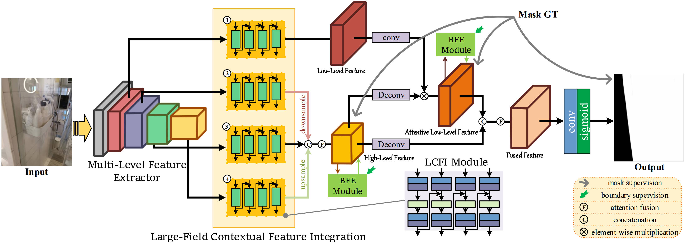
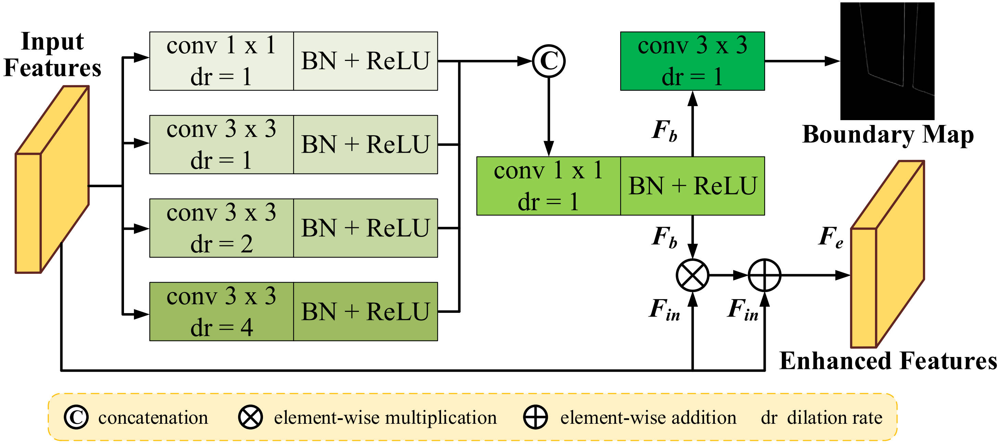

Large-Field Contextual Feature Learning for Glass Detection
Haiyang Mei1
Xin Yang1,*
Letian Yu1
Qiang Zhang1
Xiaopeng Wei1,*
Rynson W.H. Lau2,*
1
Dalian University of Technology
2
City University of Hong Kong
|
|  |
1. Abstract
Glass is very common in our daily life. Existing computer vision systems neglect it and thus may have severe consequences, e.g., a robot may crash into a glass wall. However, sensing the presence of glass is not straightforward. The key challenge is that arbitrary objects/scenes can appear behind the glass. In this paper, we propose an important problem of detecting glass surfaces from a single RGB image. To address this problem, we construct the first large-scale glass detection dataset (GDD) and propose a novel glass detection network, called GDNet-B, which explores abundant contextual cues in a large field-of-view via a novel large-field contextual feature integration (LCFI) module and integrates both high-level and low-level boundary features with a boundary feature enhancement (BFE) module. Extensive experiments demonstrate that our GDNet-B achieves satisfying glass detection results on the images within and beyond the GDD testing set. We further validate the effectiveness and generalization capability of our proposed GDNet-B by applying it to other vision tasks, including mirror segmentation and salient object detection. Finally, we show the potential applications of glass detection and discuss possible future research directions.2. Boundary Feature Enhancement (BFE)
|  |
3. Downloads
| Model | : [ Google Drive ] [ Baidu Disk, fetch code: pami ] |
| Results | : [ Google Drive ] [ Baidu Disk, fetch code: pami ] |
| Code | : [ Github ] |
4. Applications
|
5. BibTex
@article{Haiyang:GDNet-B:2022,6. Website Visit Statistics